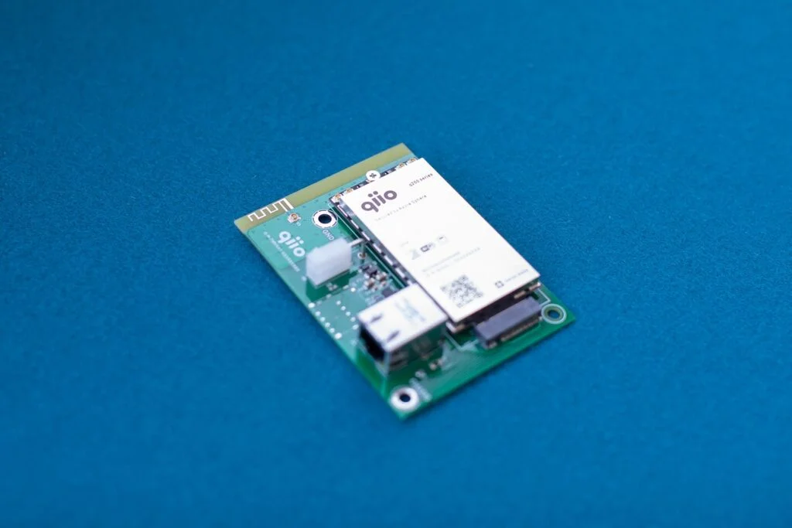

q200, the first secured mobile solution based on Microsoft Azure Sphere
On 24th February 2020, qiio launched the «q200 Guardian Module powered by Azure Sphere», q200 for short.
q200 is the world’s first solution specifically optimized for cellular capabilities on Microsoft’s Azure
Sphere.
Media coverage
We are thankful that Microsoft Switzerland, Elektroniknet.de, IT-Techblog.de and Heise shared our product
launch! Click on the links to check interviews with qiio CEO, Felix Adamczyk!